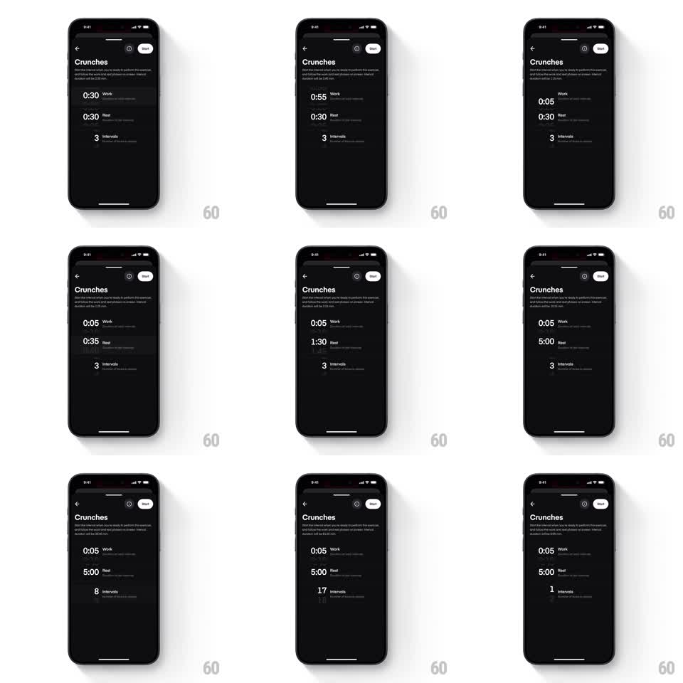

Media
Frame-by-frame

Rebuild this interaction 1:1: Dropset's interval editor - a dark workout screen where Work time, Rest time, and Intervals rows each behave like tactile vertical wheel pickers, rolling through values while the summary recalculates live.

Rebuild this interaction 1:1: Dropset's interval editor - a dark workout screen where Work time, Rest time, and Intervals rows each behave like tactile vertical wheel pickers, rolling through values while the summary recalculates live.
## Integration
Integration: stack-agnostic spec - springs given as stiffness/damping, timed motions as duration + curve; map every value to your framework and animation library of choice.
## Scene
Near-black exercise screen ("Crunches") with a description block, a Next pill top-right, and a list of setting rows: "0:30 Work", "0:30 Rest", "3 Intervals" - each row a large value with its label. While a row is being adjusted, adjacent values ghost above and below the current one (a visible wheel), and the edited row is highlighted.
## Motion spec
Pattern: vertical wheel picker per row with live recalculation.
- Dragging a row vertically rolls its value: the current value slides, ghost values above/below fade in at reduced opacity (~40%) and slightly smaller type, selling the wheel.
- The roll has inertia: fling and it spins through values, decelerating (friction tuned to land cleanly on a value in under 1.5s), then snaps to the nearest value with a soft spring (stiffness ~350, damping ~24).
- Values tick with haptic-like steps - each crossing is a discrete snap point, not free scroll.
- As a value changes, dependent rows update live (e.g. total time implied by Work x Intervals); the number crossfades (~150ms) without moving its position.
- Releasing leaves the row settled with ghosts faded out (~200ms).
## Calibration
- Snap must be decisive: resting between values is a bug state - the spring should never allow it.
- Ghost values show exactly one step up and one down; more reads as clutter, fewer hides the wheel.
## Reduced motion
Row steps value-by-value on drag (no inertia, no ghosts); snap is instant.
## Don't miss
- Time values format as m:ss and roll sensibly (0:05 to 0:30 to 1:30 to 5:00) - rolling past 59s carries the minute.
- Only the dragged row animates; other rows stay put until recalculated values crossfade.